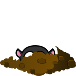
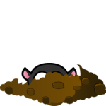
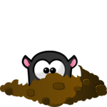
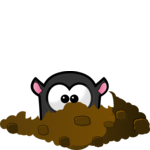
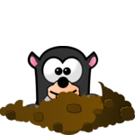
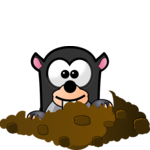
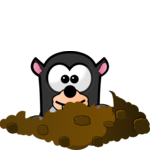
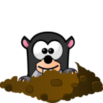

Анимација по фазама¶
Семафор¶
Један од најпознатијих примера уређаја који ради по фазама је семафор који регулише саобраћај. На примеру семафора ћемо објаснити рад по фазама и како можемо да анимирамо на рачунару догађања која се одвијају по фазама.
Постоји неколико стања у којима семафор може да се нађе. На пример, може да светли црвено, да светли трепћуће жуто, да буде искључен итд. Период у току којег семафор не мења стање зваћемо фаза. При нормалном раду семафора фазе се циклично смењују и свака фаза има своје трајање. Узмимо као пример семафор на коме се смењују следеће четири фазе: 1 - црвено светло, 2 - црвено и жуто светло, 3 - зелено светло, и 4 - жуто светло.
Да би анимација била једноставнија, трајање сваке фазе ћемо изразити бројем фрејмова (уместо секундама). Нека су трајања поменутих фаза \(n_1\), \(n_2\), \(n_3\) и \(n_4\) фрејмова редом. Тада цео циклус траје \(N = n_1 + n_2 + n_3 + n_4\) фрејмова. Од тих \(N\) фрејмова, првих \(n_1\) припада првој фази, следећих \(n_2\) другој итд.
Да бисмо знали којој фази припада текући фрејм, можемо да уведемо глобалну променљиву која броји фрејмове. Пошто цео циклус траје \(N\) фрејмова, довољно је да бројимо по модулу \(N\). То значи да када бројач фрејмова достигне вредност \(N-1\), следећа вредност је нула (бројимо само у оквиру једног циклуса). При томе, за вредности од 0 до \(n_1 - 1\), фрејм припада првој фази, за вредности од \(n_1\) до \(n_1 + n_2 - 1\), другој фази, за вредности од \(n_1 + n_2\) до \(n_1 + n_2 + n_3 - 1\) трећој, а за вредности од \(n_1 + n_2 + n_3\) до \(N-1\) четвртој.
Ево како може да изгледа програм написан на основу овог разматрања:
Задаци¶

Пета фаза: Копирајте претходни програм, па убаците фазу за трепћуће зелено светло после зеленог, а пре жутог светла (као у примеру - дугме “Прикажи пример”).
Помоћ: У петој фази нећемо имати један позив функције crtaj_semafor, него део кода који отприлике изгледа овако:
if i_frejm % 2 == 0:
crtaj_semafor(...)
else:
crtaj_semafor(...)
Авион: Напишите програм који ради као у примеру (дугме “Прикажи пример”).
Опис кретања: авион полази са средине леве ивице прозора. Креће се прво 20 фрејмова по 2 пиксела десно и горе, затим 20 фрејмова по 2 пиксела десно и доле. Када изађе кроз десну ивицу прозора, појављује се на истој висини са леве стране. Брзина приказивања је 50 фрејмова у секунди.

{kind=link}
Кртица: Напишите програм који ради као у примеру (дугме “Прикажи пример”).
Учитава се 10 слика на којима кртица редом све више вири из рупе. Циклус има четири фазе, које заједно трају 28 фрејмова.
Прва фаза траје 10 фрејмова и током ње кртица излази из рупе (приказују се редом слике од прве до десете).
Друга фаза траје 5 фрејмова и током ње кртица је у највишем положају (приказује се десета слика).
Трећа фаза траје 10 фрејмова и током ње кртица улази у рупу (приказују се слике од десете до прве).
Четврта фаза траје 3 фрејма и током ње кртица је у рупи (приказује се прва слика).

 

{kind=link}
 

{kind=link}

 



{kind=link}
{kind=link}